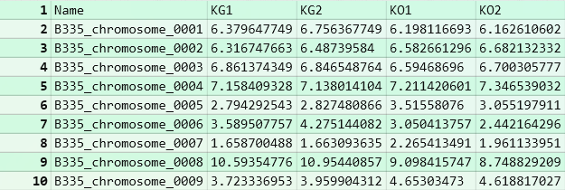
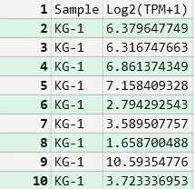
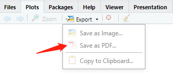
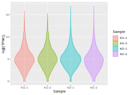
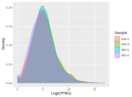

本文为R语言绘制小提琴图和密度图绘制的简单记录。
R语言：小提琴图、密度图绘制
前言
本文为R语言绘制小提琴图和密度图绘制的简单记录。
1. 数据准备
以如下数据为例，2-5列为样品名，值代表Log2（TPM+1）
保存为csv格式。
2. 数据处理
整理成如下格式，因子为一列，数据为一列（也可以再R里处理需要library(tidyverse) #包含了ggplot2包和数据处理用到的dplyr包）
保存为csv格式。
3. 数据导入RStudio并绘图
- 读取数据
DensityTPM <- read.csv("densityTPM.csv", header = T)
- 载入ggplot2包
library(ggplot2)
- 新建一个图层画密度图
pTPM <- ggplot(DensityTPM, aes(x = Log2.TPM.1.))
- 美化密度图
pTPM + geom_density(aes(color = Sample))
pTPM + geom_density(aes(fill = Sample, color = Sample), alpha=0.4)
pTPM + geom_density(aes(fill = Sample, color = Sample), alpha=0.4) + xlab("log2(TPM+1)") #更改横坐标为log2(TPM+1)
- 新建一个图层画小提琴图
plotViolin <- ggplot(DensityTPM, aes(x = Sample, y = Log2.TPM.1.))
- 美化小提琴图
plotViolin + geom_violin() #先画默认的图
plotViolin + geom_violin(aes(fill = Sample, color = Sample), alpha=0.4) #根据样品填充不同颜色
plotViolin + geom_violin(aes(fill = Sample, color = Sample), alpha=0.4) + ylab("log2(TPM+1)") #更改纵坐标为log2(TPM+1)
绘图保存
在RStudio如下窗口保存绘图结果：
结果如下：

参考来源：